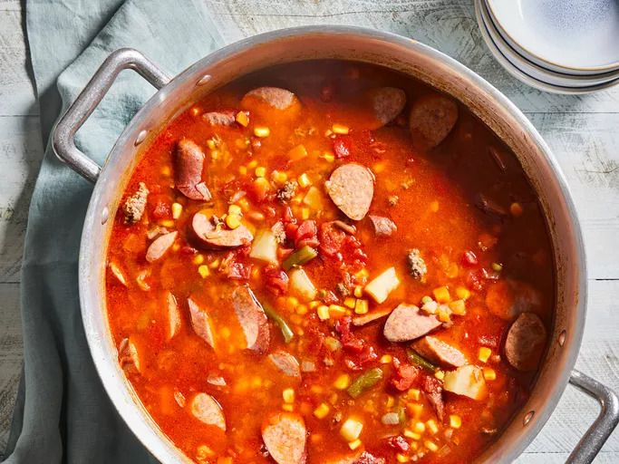
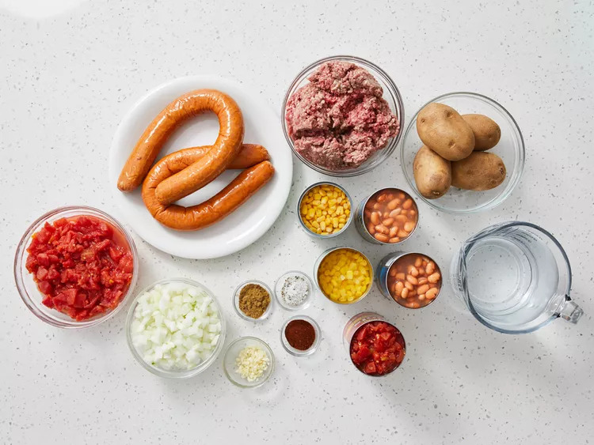
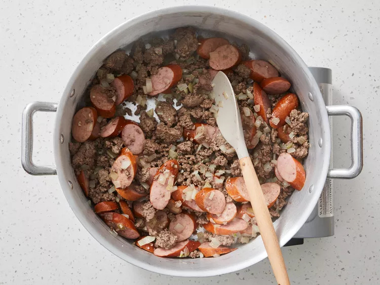
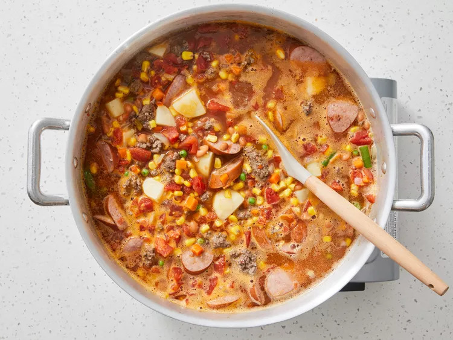
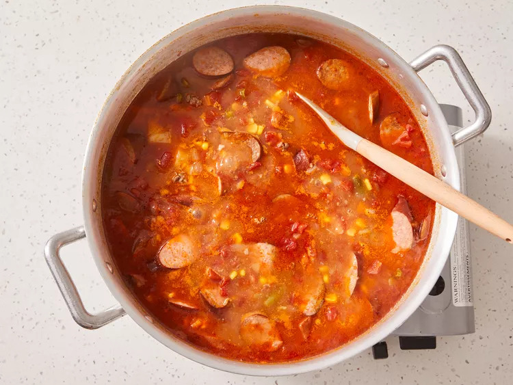

Cowboy Stew recipe

Description
This easy cowboy stew recipe is hearty and filling with kielbasa sausage,
cumin, chiles, and chili powder for some Southwest appeal.
It's quick and easy to make on the stovetop
but tastes best when simmered all day in a crockpot.
Serve with cornbread and a simple green salad.
Ingredients
- 2 pounds ground beef
- 2 pounds kielbasa sausage, sliced into 1/2 inch pieces
- 1 medium onion, chopped
- 2 cloves garlic, chopped
- 4 cups water
- 2 (15.2 ounce) cans whole kernel corn, with liquid
- 2 (15 ounce) cans pinto beans, with liquid
- 2 (14.5ounce) cans peeled and diced tomatoes, drained
- 1 (14.5 ounce) can diced tomatoes with green chile peppers, with liquid
- 1 (10 ounce) package frozen mixed vegetables
- 4 medium baking potatoes, peeled and diced
- 2 teaspoons ground cumin
- 2 teaspoons chili powder
- salt and pepper to taste
steps
-
Gather all ingredients

-
Cook ground beef in a large skillet over medium-high heat
until crumbly but not yet cooked through, about 5 minutes.
Add sausage, onion, and garlic; cook and stir until meat is no
longer pink and onion is translucent, 5 to 7 minutes.
Drain grease.

-
Transfer beef and sausage mixture to a large pot over medium-low heat.
Add water, corn, pinto beans, diced tomatoes, diced tomatoes with chile peppers,
and mixed vegetables. Stir in potatoes, cumin, chili powder, salt and pepper.

-
Cover and simmer, stirring occasionally for a minimum of
1 hour; the longer it cooks the better it gets.
